princess louisa inlet
Princess Louisa Inlet
(Suivoolot, Chinook word for 'sunny and warm')
23.06.20
Note. Land acknowledgements to come, when we have more bandwidth to properly research this area's rightful nations/bands
On June 19th, we left smuggler cove and went to the public dock in Pender Harbour to renew our supply of fresh vegetables.
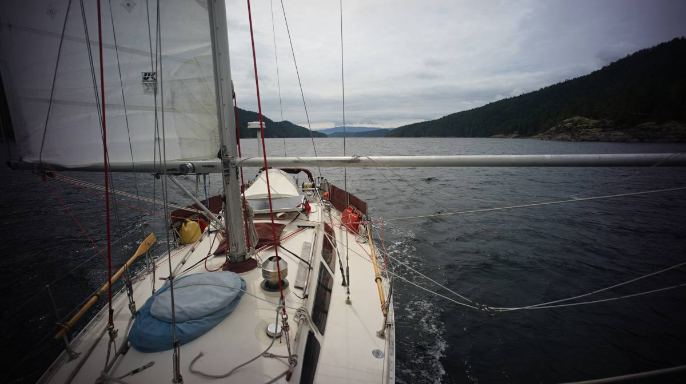The next day, we left Pender Harbour at 11h30, and headed into Agmamenon Channel.
Our plan was to anchor in Green Bay, and to maybe wander into Hotham Sound the day after, but we found such good wind in the channel that we decided to keep sailing. Pino was running downwind, wing on wing, gliding effortlessly through the channel.
The wind was 15-20 out of the SE that day, with a grey, cloudy sky.
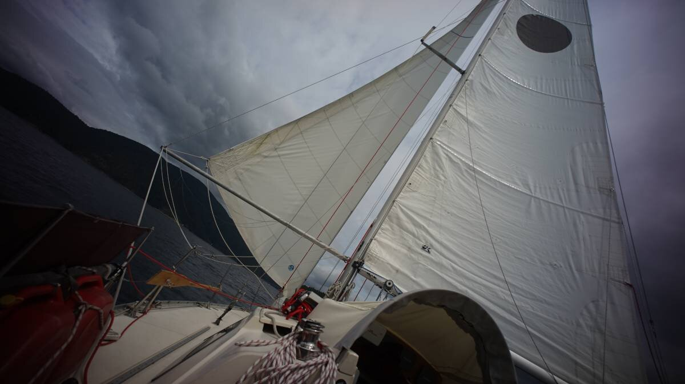We'd read that this was a busy commercial artery, but we found it quiet and devoid of traffic. We had wind right up to where it opens up into Jervis Inlet proper, with Skoookumchuck Narrows to our starboard side, and Hotham sound on the other.
The wind was disturbed by all of the various arms of this area, and then died. It picked up again near Dark Cove, and then we decided to try our luck, and to head north, into Prince of Wales Reach.
Sailing to Princess Louisa Inlet
We long hesitated to come to Princess Louisa Inlet (for brevity's sake, we'll shorten it to PLI), because we didn't want to have to motor that distance. Friends of ours often told us at how difficult it was to find good wind in here, going either in, or out.
The SE 15-20 knot winds SE that helped us sail through Agmamenon Channel don't quite reach up here. In the day, here you have to rely on inflow/outflow winds.
For more information about inflow/outflow winds, and on finding ways to sail to nearly every destination, we recommend reading Taken by the Wind: The Northwest Coast by Marilyn Johnson.
Inflow winds. In Jervis Inlet, on a sunny day, inflow winds occur in the day, flowing from water to land. When there is a great temperature difference between land and sea, as is the case in long fjords that go deep inland, there will be strong inflow winds.
When we entered Prince of Wales Reach it was well past noon, and we had good wind(albeit, strong at times) all the way to Queen's Reach. Leaving in the afternoon can certainly improve the chances of wind in this area, but it also means a late arrival into PLI, which may or may not coincide with slack at Malibu Rapids. Inflow winds die at dusk, because the sun is no longer heating the land.
Outflow winds. Outflow winds are not as common, they occur at night/very early dawn. At night the land and surrounding air cools off, so air pressure over land increases. The water is still cold, their interaction results in air flowing from a high pressure area (land) and back out to sea. If these winds occur, they won't be as strong as inflow winds, because in the Jervis Inlet area summer nights aren't overly cold, and the low temperature difference between land and sea means calm, or low wind nights.
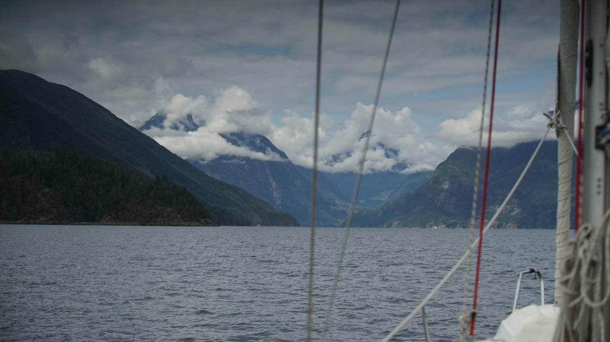When heading north toward Princess Louisa Inlet, there are three reaches to go through:
Prince of Wales Reach
Princess Royal Reach
Queen's Reach.
All have their particularities...
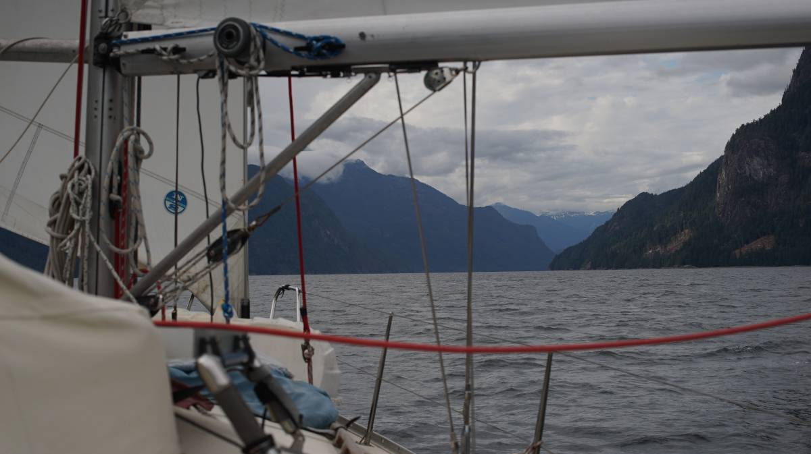Prince of Wales Reach offered good wind, but near the end we rolled up the jib, and ran with the mainsail alone because of the occasional willywaws that came rolling down from the mountains. Our sails were set for downwind sailing, any big change(hello willywaws) would result in violent near-gybes.
The problem with a poled-out jib is that it's not possible to tack in an instant, the pole is long, and when attached to the mast it reaches all the way to the headstay (with the babystay inbetween). To tack, we have to move the pole on the other side of the baby stay (not a quick thing to do).
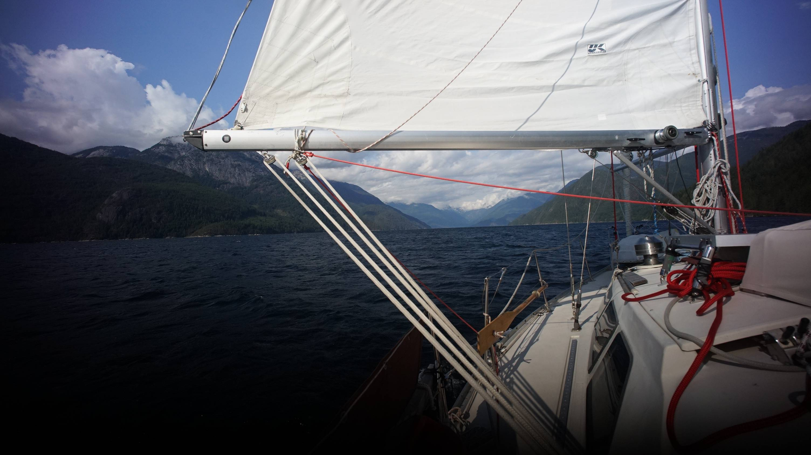It's when we turned into Princess Royal Reach that things became more exciting. The wind rose even higher, whistling through the rigging, and pushing us fast toward our destination. Our wind meter doesn't work, so we couldn't tell you how mean that wind really was, but generally, when there is whistling... it is at least 25-30 knots.
We ran under full main, the wind pushing us at 8-9 knots. We had not planned to cross into Malibu Rapids that day, we hoped to enter in the morning, anchoring in Deserted Bay for the night but it appeared to offer no protection from inflow winds and waves. Deserted Bay wore its name well that day.
We had three choices then... to enter Malibu Rapids (there was a slack tide that night at 21h40), knowing that it would be dark by the time we arrived in PLI, anchoring at Patrick Point for the night with plans to enter PLI in the morning, or waiting at Patrick Point till the wind abates at dusk to go back to Deserted Bay to anchor for the night(again, with plans to leave for PLI come morning). We instead decided to try and pass the rapids.
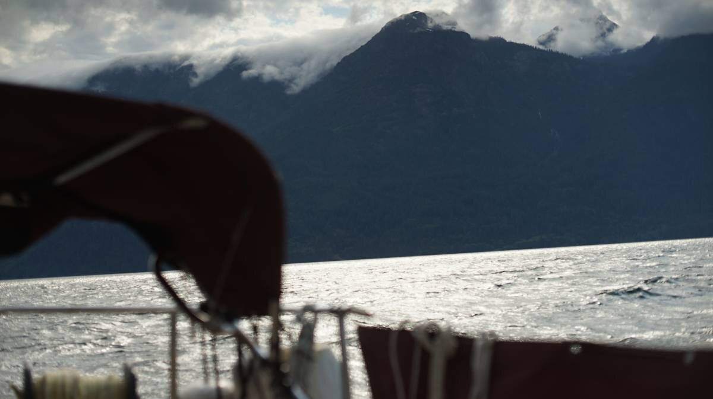Malibu Rapids
To enter PLI, it is necessary to enter through Malibu Rapids at or near slack tide. These rapids can ebb and flood at 8-9 knots, creating hazardous conditions for small craft. We knew that high water slack that evening was at 21h40. When we gave up on Deserted Bay it was 18h30, we were closing in on Queen's Reach and decided to douse the main to slow our progress (we had many hours to wait until slack).
Wrestling the sail down in big winds is never easy, or fun. Keeping the bow into the wind/waves, even while motoring, was very difficult. It appeared as though Princess Royal Reach really wanted to kick us out.
The wind just kept screaming at our heels, so instead of waiting in this terrible place, we moved into a little quiet nook called Patrick Point (50°6.127'N, 123°49.361'W) just when turning into Queen's Reach.
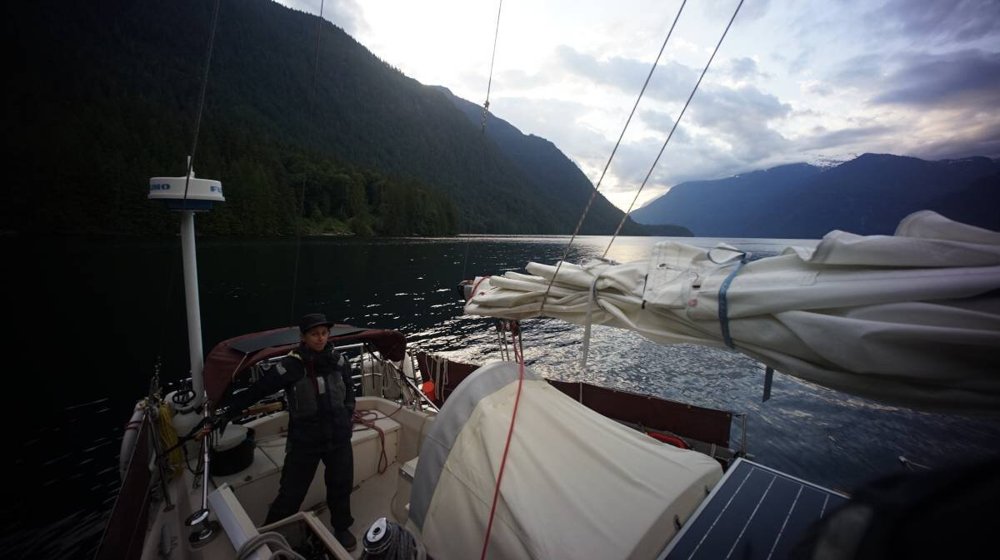This place was in a wind shadow, there wasn't a single ripple in the water. We let the boat drift here for a while, in absolute quiet. A stream of water cascaded down from the cliff behind us, birds chirped, and the air smelled green.
Around 20h00, we ghost sailed to a weak patch of wind, opened a tiny jib, and let ourselves drift at a slow speed of 1-1.5 knots towards the entrance to PLI.
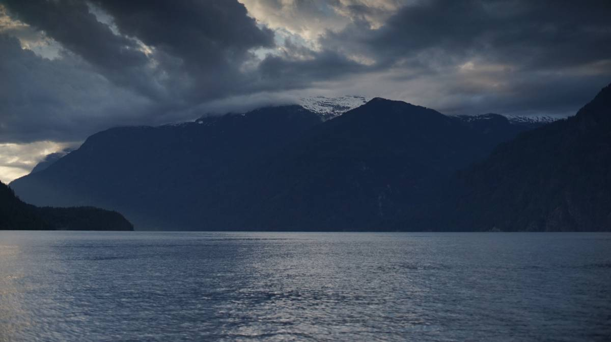We knew that entering at 21h40 meant that the sun would be near set, but thank goodness for long summer days, the sun was behind the hills and there was still plenty of light.
We wandered near the entrance, and looked with a pair of binoculars to see if the water appeared disturbed, if there was still a current running. The water was flat calm, with no apparent current. It is always a good idea to look first to make sure that the water is at slack, because we learned that sometimes water likes to cheat time.
For Malibu Rapids, it is important to refer to the Canadian Tide and Current Tables Vol. 5 (Juan de Fuca Strait and Strait of Georgia), and to refer to the time of high water/low water at the Point Atkinson reference port.
As a general rule, slack tide at Malibu Rapids is:
25 minutes after high water
35 minutes after low water
The aforementionned tide tables use Standard Time, in the summer it is therefore necessary to add 1 hour because of Daylight Savings Time.
The waters at Malibu Rapids are navigable 15 minutes before, or after this time. If you have a small engine, like us, we recommend only entering/exiting at slack tide. Also, if possible, enter/exit at high water instead of low (or on a neap tide), because there is more water, and therefore less pull.
Note: a lot of navigation software (OpenCPN, WXTides, JTides etc) use public domain harmonic.idx sources files that do not display the correct currents for these rapids. Navionics does not display the current for this particular pass, it is necessary to look at high/low tide at Point Atkinson and to do the proper calculations.
The water was flat calm on our entrance, we had no issues at all. The entrance has a sort of S shape with a blind curve, making it hard to see the entrance if coming from the south, but the Christian Youth Camp is perched right on the north shore and is a good entrance marker. Pino glided through Malibu Rapids in very calm waters. We were both relieved to have passed this second obstacle (the first being passing the 3 reaches), but now we were faced with a third, the quickening dark... and the fact that we had to find a place to tie up, or anchor in for the night.
The sky got darker by the minute, by then the high cliffs bordering the inlet were devoid of detail, our path was lined by dark walls.
Once past Malibu, it is another 4 nautical miles to the dock in PLI. We passed the first set of moorings at MacDonald Island (with a single boat moored there). Devine wanted to try for the dock, and so we did. We spied some anchor lights ahead, which we later learned were from boats on the mooring field SE of the main dock. The dark veil got thicker as we approached the head of the inlet. Binoculars in hand, we could make out big white shapes at the dock, like a string of icebergs all gathered in one place.
The dock had many large motor boats(icebergs) on it, but there was room for a Pino, or two. Phew! We wouldn't have to wander back to the mooring field in even darker darkness.
Pino was tethered to the dock at 22h30, 46 nautical miles later. We were exhausted, but glad to have arrived, and thankful to not be stuck outside of the inlet all night. We can't recommend arriving at night, had there not been room at the dock it would have been tricky to go back to find a place to moor (anchoring in low light in this place is definitely not recommended). We had no help from the moon that night, the sky was heavily overcast.
James Frederick MacDonald
It is lucky that it is possible to visit PLI today, and to have access to land, as well as a dock, and moorings. This place is unique, extremely valuable, it could have easily been overtaken by private homes, or luxury hotels.
Way back when, the land belonged to James Frederick MacDonald (1889-1978), someone who loved PLI, and who believed that it should not belong to any one person. He donated the land to an organization with the aim to keep it intact, and unspoiled by tourism or industry. Now, BC Parks cares for the inlet, and they've done a very good job of it so far.
This inlet is very deep, making it tricky to find a suitable anchoring spot. The dock, and the moorings, make finding a spot easy, and safe. The park asks for donation for use of both the dock, and of the moorings.
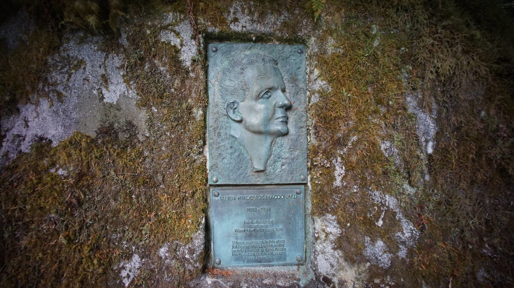A plaque ashore reads:
Laird of the Inlet
Gentleman
Friend to all who came here
Whose monument is this place
of beauty given by him to the
yachting fraternity of the Pacific
Northwest so that it will remain
forever unspoiled.
Hey, thanks a lot James!
Chatterbox Falls Dock
We awoke to a wondrous sight the next morning. Chatterbox Falls are right by the dock, and the sound echoes throughout the inlet.
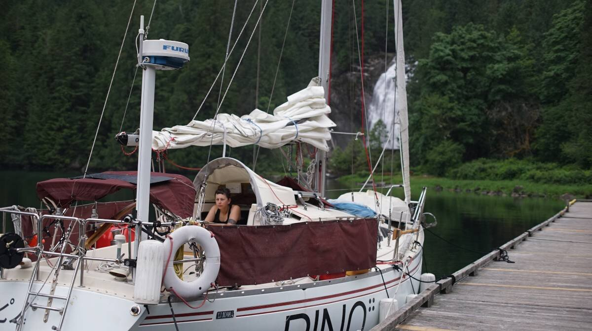PLI is truly a picturesque place, nestled between extraordinarily large mountains and cliffs, blessed with clear waters and lush forests. The waters in the inlet are very calm, it is well-shielded. Any boat wakes travel far thoughout the inlet, from wall to wall, and take a long while to subside. If motoring in this inlet, go slow.
A short loop trail leads to the falls.
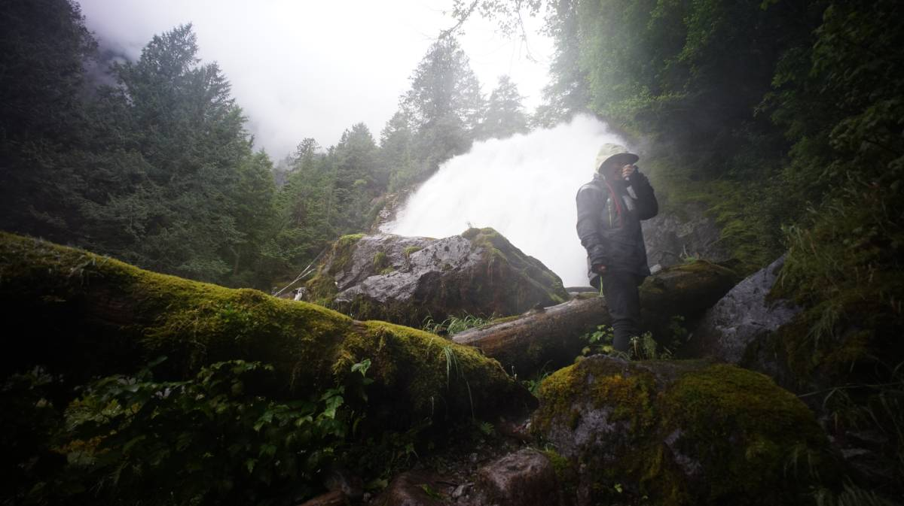The dock is large and has room to moor on both sides, although the end of the ramp is reserved for small tour boats (area is marked by yellow paint), and the other end is there to accommodate float planes.
Visitors by small motor boat only come for a short time, long enough to have lunch and to take pictures of the Falls.
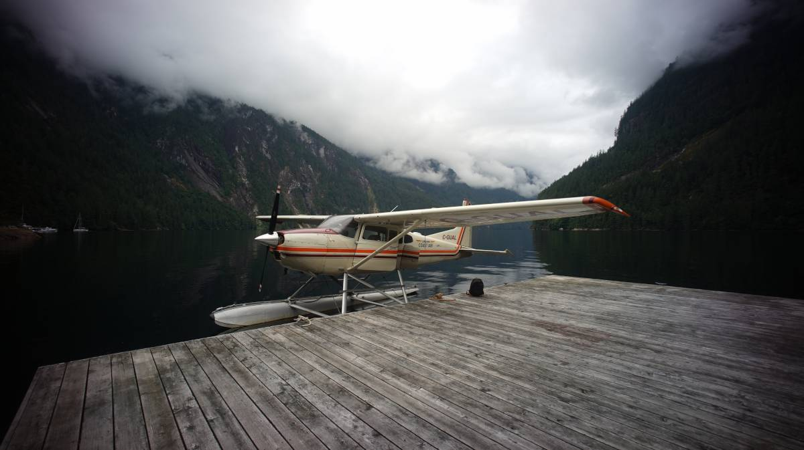There is no way to come to this inlet other than by small float plane, or by boat (there is no road).
The waters around the dock are deep, we had 90 feet under our keel (50°12.281'N, 123°46.159'W). A single boat was anchored in front of Chatterbox Falls, 2 more went to anchor there later (due to lack of space at the dock and at the moorings). The current and slight wind from the Falls keep the boats aligned, bow toward the shore.
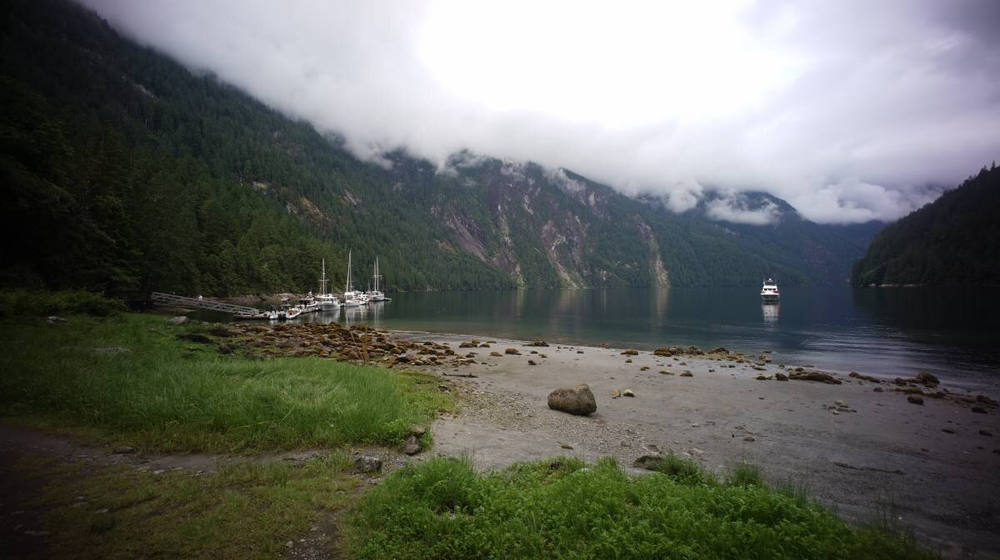The dock in Princess Louisa Inlet is often populated by large motor boats(15m/50ft limit), all of which run their engines at one point in the day(sometimes twice a day, or all day) to charge their batteries. In a quiet place, it seems like there's never really a good time to run an engine and/or generator. At times, we had to shut the windows to keep the noise and smell out.
The dock is a fine place if you're in a chatty mood, and it was nice to stay there for one day, but we soon grew tired of the noise.
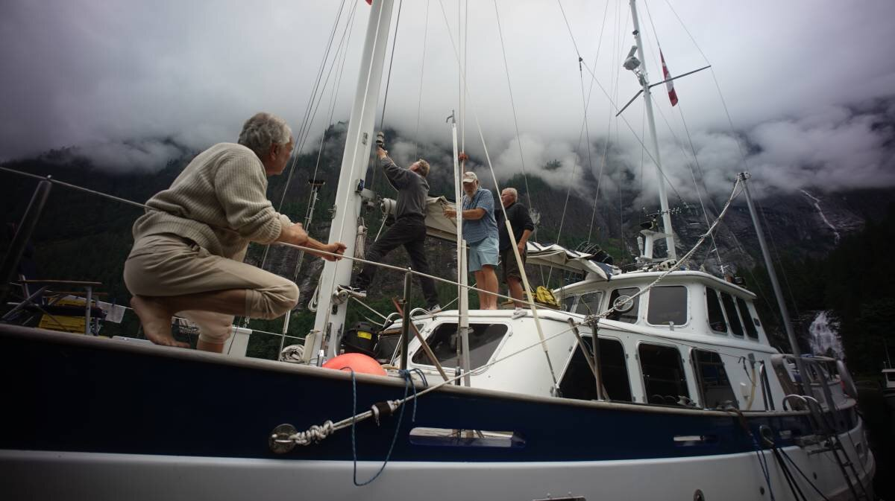Our friend Jerry, a dock neighbor in Victoria, was moored on the Chatterbox Falls dock when we arrived. We had seen his boat motor past us in Agmamenon Channel, as we sailed on. We half-expected to find him in PLI, but could not understand why they hadn't gone by sail. We later learned that the boat had no sails that day, Jerry's friends helped rig them up on the dock (this is what's happening in the above photo).
Moorings
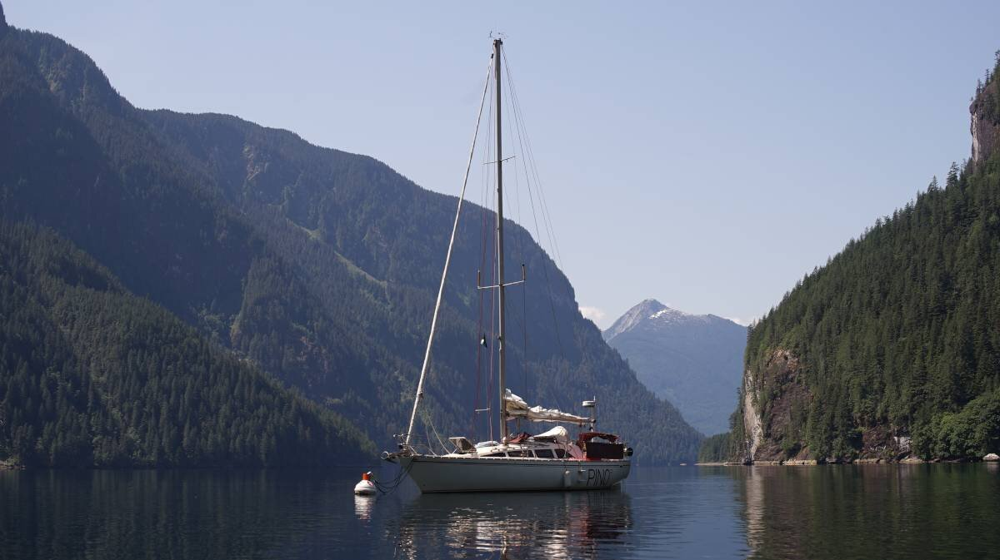SE of the dock are 5 park mooring buoys, with 4 more near MacDonald Island further south. It's a good alternative when in need of some privacy, and when tired of breathing exhaust fumes at the dock (50°12.111'N, 123°46.027'W). When our neighbor started flying a drone around the dock, we decided it was time to move.
Like the dock, the mooring buoys arent anchored on the sea floor, they are tethered to various points (trees, rocks) by way of thick lines.
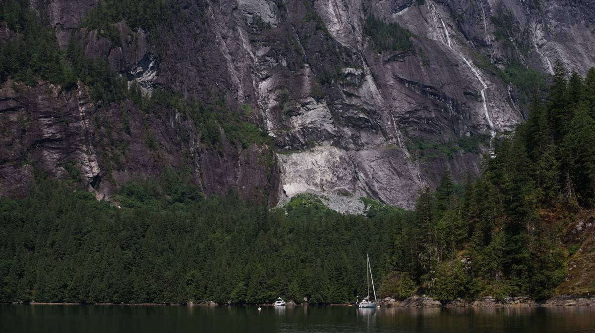The SE moorings are near another set of falls, and offers a nice view on the opening of the inlet further south.
It doesn't matter where you moor in this inlet, the view is always wonderfully dramatic.
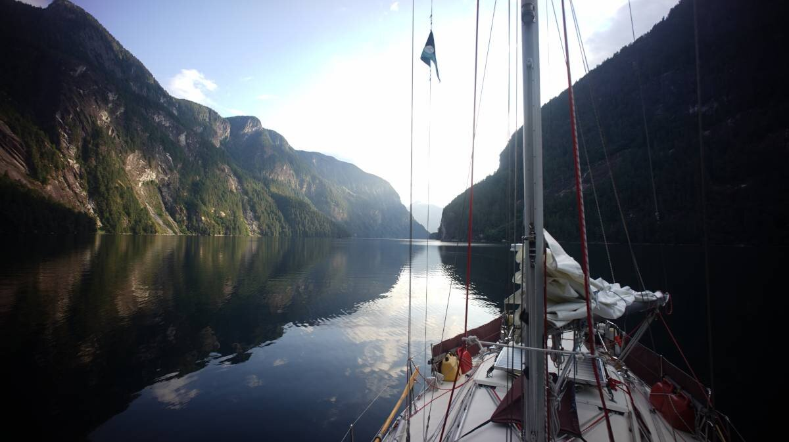Trapper's Cabin Trail
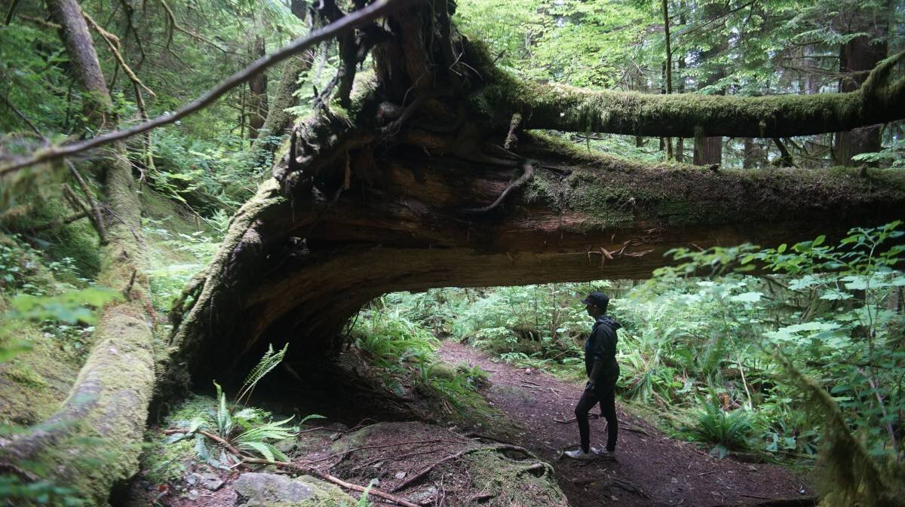A trail leads to the remains of a trapper's cabin, accessible by the Chatterbox Falls dock.
We packed water, jackets, snacks, a first aid kit, flashlights, and a radio. Having them and not needing them is better than the alternative, and even if we don't get hurt, carrying these can be useful in case others need help. If going up this trail, be sure to tell someone on the dock, that way if you don't come back they'll know to look for you.
Signs warn of the dangers of this trail, that it is unmaintained and hazardous. Indeed, this trail is an uphill battle, where one must contend with loose soil, patches of wet moss, and many protruding roots. Even so, if one is careful, and prepared, nothing will happen. We watched where we put our feet constantly, to make sure that what we stepped onto would hold our weight.
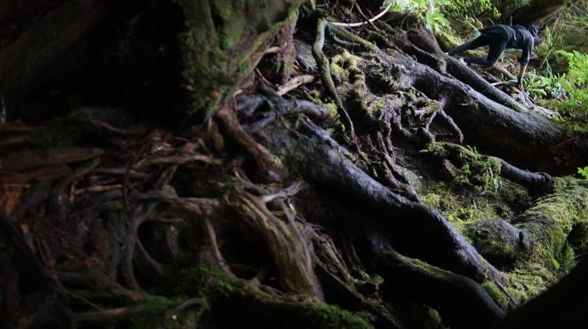Going up is more tiring than it is difficult, pink and orange tape in the trees mark the trail, but most times it is easy enough to see the right way up. If the climb is especially difficult or tree-ridden, you can be sure that you've gone off trail. The ground is well-trodden, making it that much easier to see where to go.
While we were there, a fellow boater installed some short sections of floating line at various points to make it easier to climb (Thank you MV PrimeTime).
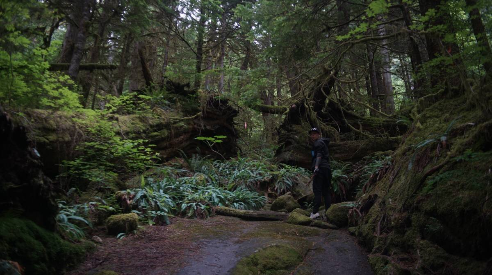As expected, the forest here is absolutely stunning, with lots of fallen giants, intertwining root systems, ferns, and mounds of thick, wet moss.
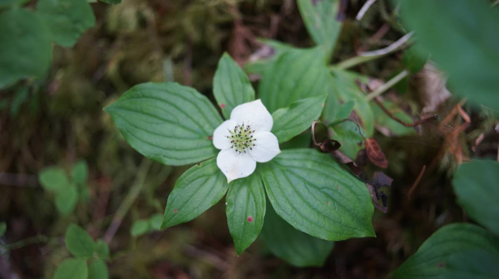The hike up to the cabin takes about 4 hours total (2 to go, 2 for the return). We did it twice. The first time, we stopped 2/3's in. We went back to the next day and made it all the way to the cabin and yet another set of beautifu waterfalls.
Cabin/waterfall location: 50°12.542'N, 123°45.358'W.
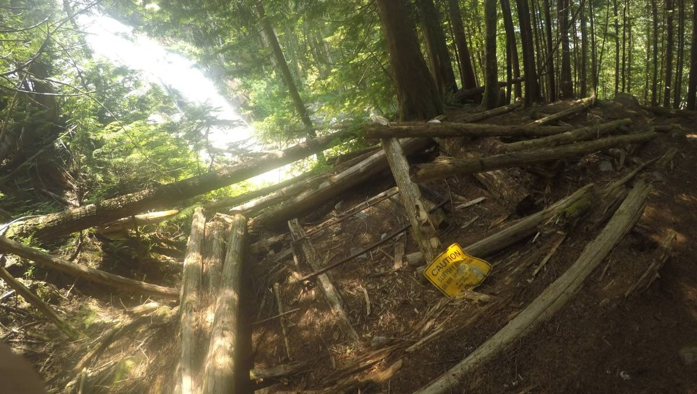Amongst some wood beams on the ground, was an old sign battered sign, along with the rusted metal frame of an old bed.
The sign reads:
Caution
Slippery rocks
Do not approach edge
In memory of Liam Von Bern'__'(the two last letters are rubbed out)
BC Parks
When near the waterfall, it is possible to view the whole inlet, MacDonald Island, as well as Malibu Rapids.
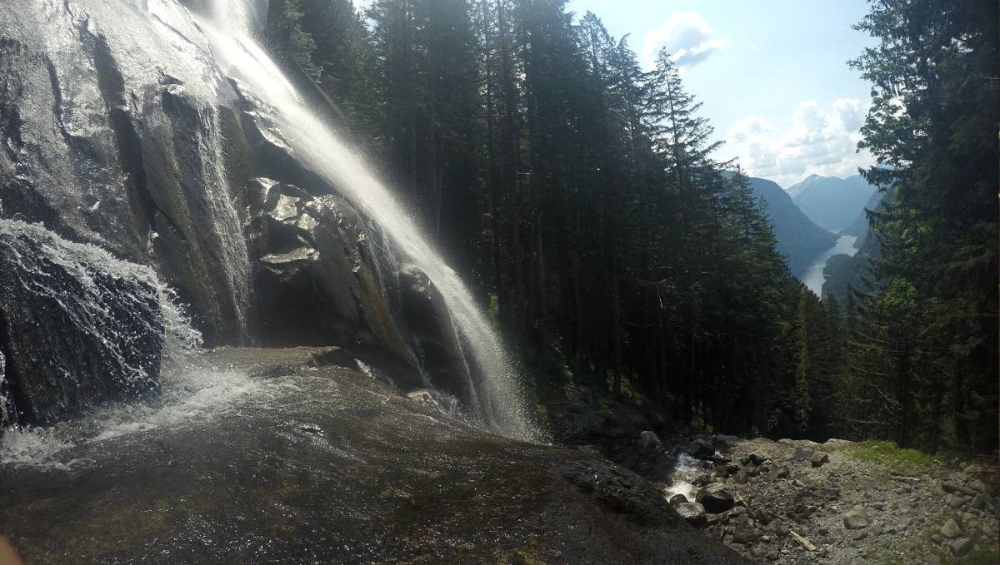Sailing out of Princess Louisa Inlet
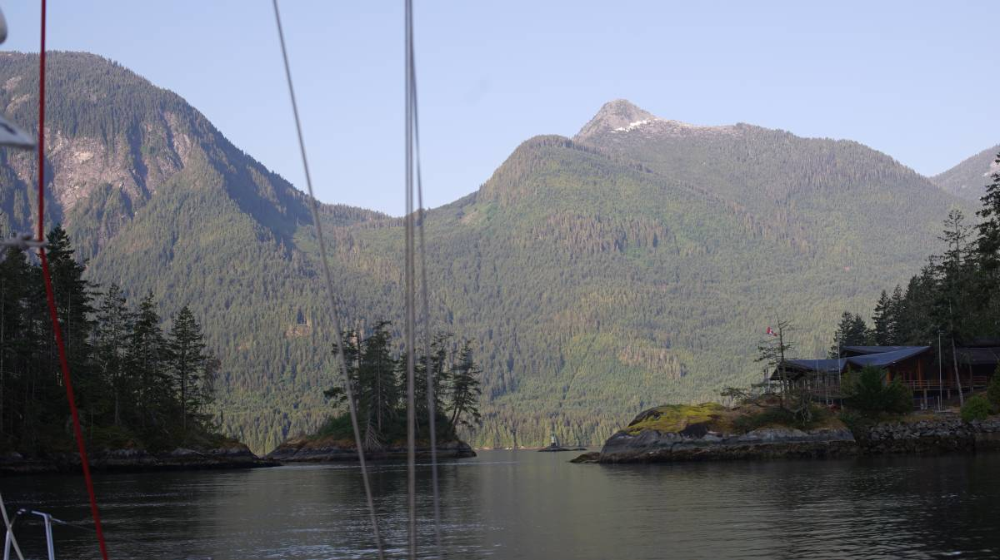On June 25th 2023, we left our mooring at 6h30 to cross Malibu Rapids again at 7h30 (low slack on a neap tide).
Our second passage through these rapids was as equally uneventful as the first, the waters were calm.
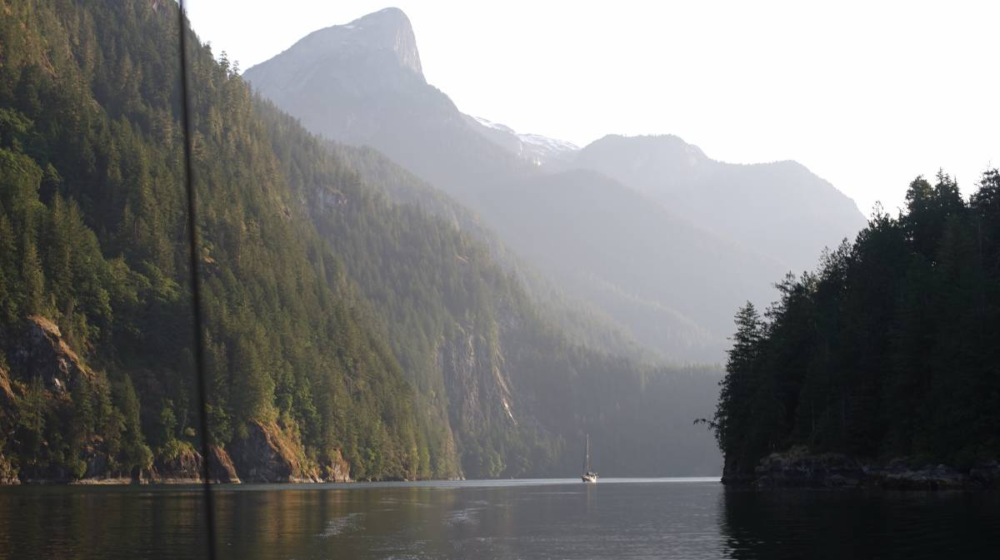4 other boats exited at the same time as us, because it was early, we had no boats on the south side to contend with.
Boats transiting through Malibu Rapids ought to announce their passing on the radio. If many boats are out there waiting, the first boat through ought to announce the number of boats behind them, so those on the other side know to wait:
"SECURITE. SECURITE. SECURITE. This is the 33-foot sailing vessel Pino, southbound out of Malibu Rapids. Any concerned traffic call back on channel 16. Over."
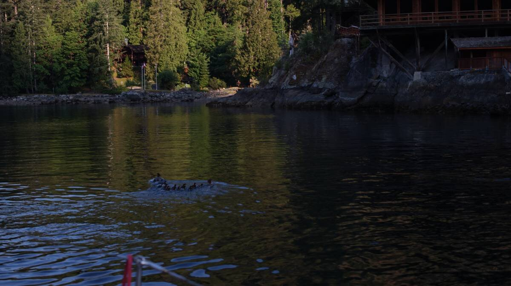On our way out we startled a family of mergansers while transiting the pass. The babies were so flustered that it took a while for the parents to gather them, and to get them all to agree to go in one direction.
The ride back through the 3 reaches was not very exciting, but the views were just as breathtaking. Queen's Reach was as quiet as ever, then we got some wind on the nose at around 8h30 when partway through Princess Royal Reach, and this wind stayed on our nose for the entirety of the trip. The day was sunny and warm already then, and so the inflow winds started early.
The wind follows the reaches, and so no matter how many turns you make, or angles you try to take, the wind will always be in your face. This was advantageous for the way north, as it followed our stern and kept the bellies of our sails taut no matter what, but evidently, it was not ideal today.

We would have liked some sailing wind on the way south, but catching outflow winds only seems possible at night, and even so, they apppear to be quite weak in the summer. Calcifer had to work very hard that day, it carried us all the way into Hotham Sound.
Below is a shot of Pino in Baker Bay.
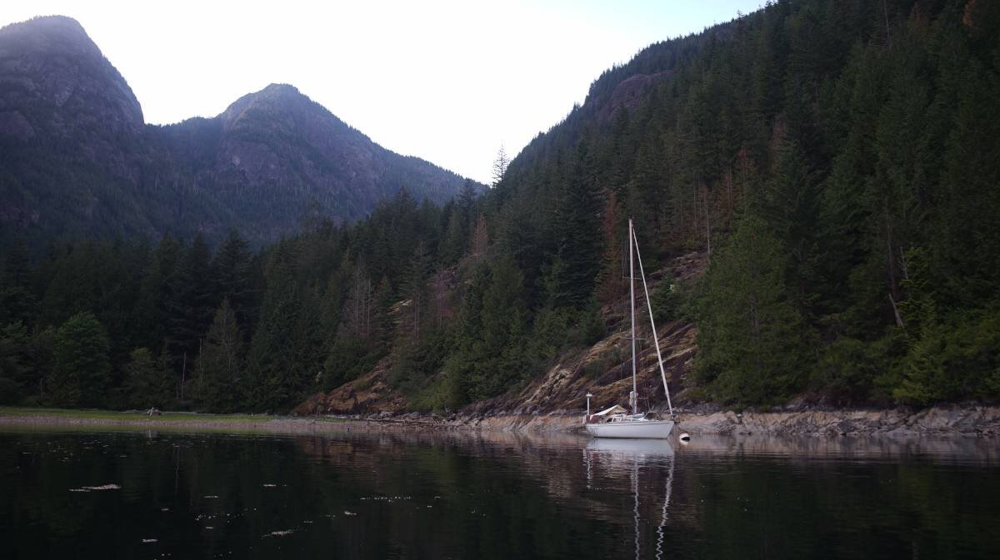Now, it's time for a rest.